Neal Behrendt
| Home | Design | UI | Advertising | Resume |
Hello and welcome to my website. Take off your coat and stay a while.
Please look around and peruse samples of graphic design, mobile UI design, advertising layouts, and, if so inclined, my resume.
I am the proprietor of Is That My Beer? - a site to showcase craft beers and homebrews.
I am the proprietor of Is That My Beer? - a site to showcase craft beers and homebrews.
Featured: Single-page Apps
Scale Finder for Piano
Find the keys in each scale. 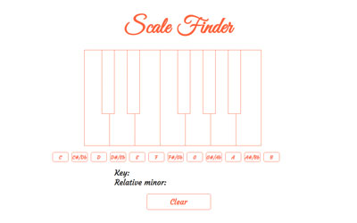
Find the keys in each scale. 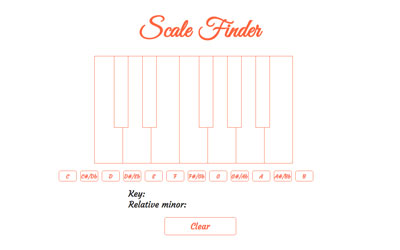
Magic 8 Ball
Ask your burning questions. 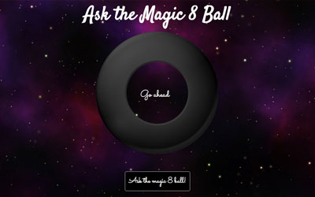
Ask your burning questions. 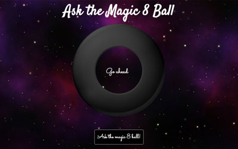

California Drought Poster
Public service poster concept addressing the California drought and promoting water conservation.

Beer Tap Handle Design: Citra Pale Ale
Beer label for an American pale ale brewed with Citra yeast. Mounted on a custom-made tap handle in second image.
Sustainably Made Badge
Concept for a badge to be placed on the packing of certified sustainably-made products.
Levity Aerial Logo and Business Cards
Logo and business card design for Levity Aerial, a drone photography and videography company.
Throwback MIDI Logo
A retro take on the MIDI logo that pays homage to its 1980s roots.
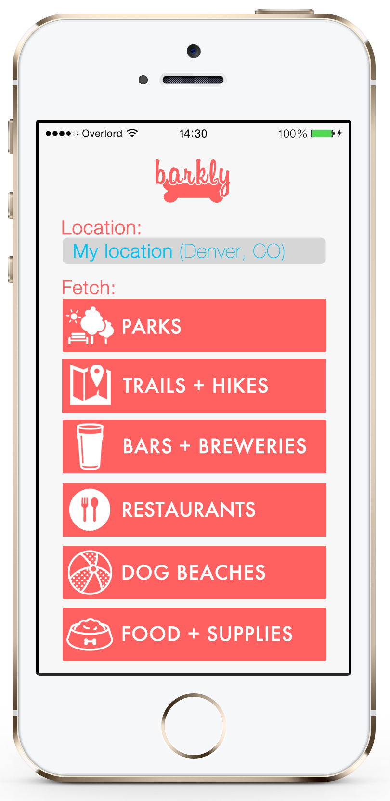
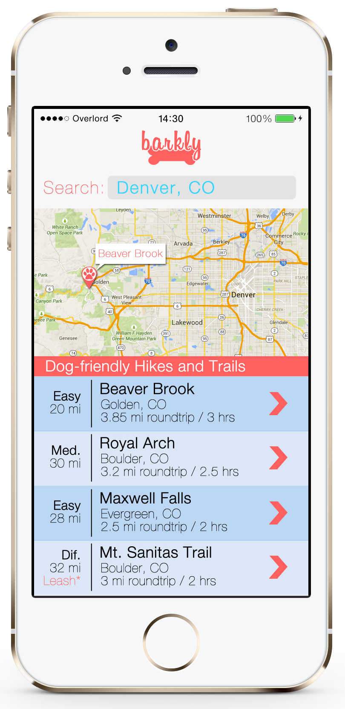
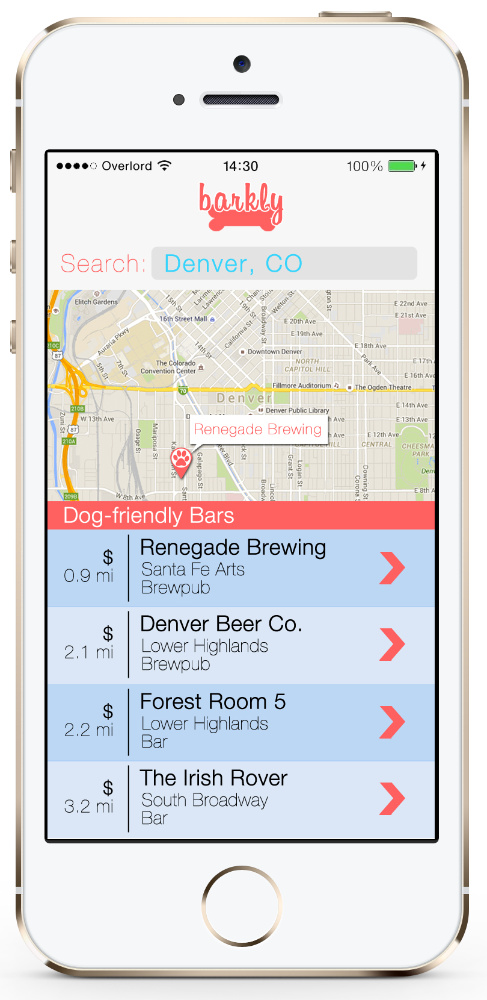
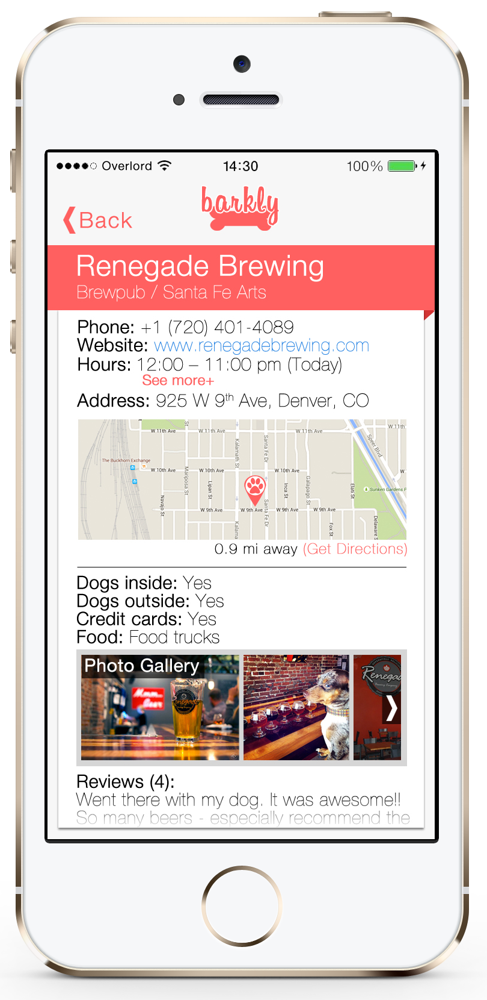
Barkly Mobile App - In Development
Barkly is a mobile app for dog owners to locate parks, trails, dog-friendly bars and restaurants, and pet supply stores based on location. All of the locations displayed on Barkly are dog-friendly, making it an easy way to find the best places to take your pooch. Screens displayed below are a list of dog-friendly bars and breweries, a detail page for a dog-friendly brewery, and nearby hikes.
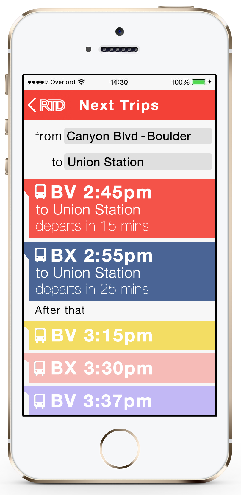
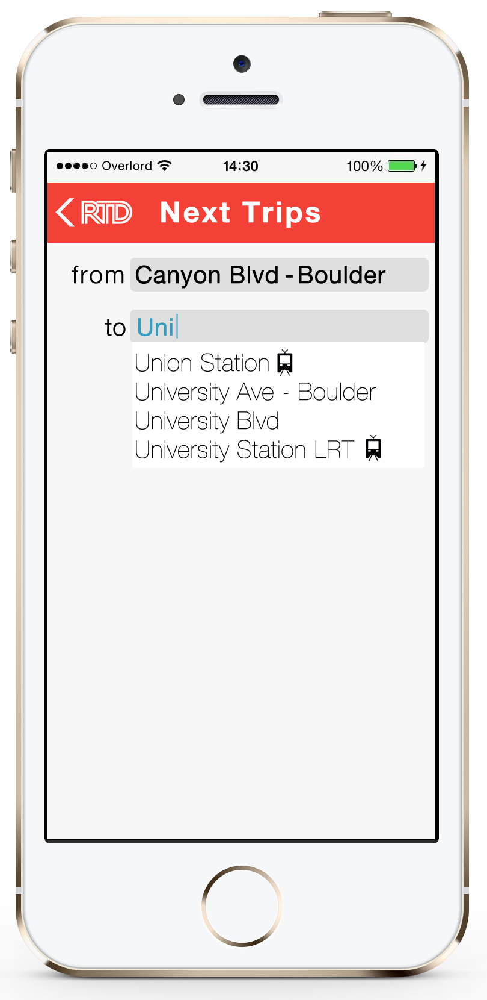
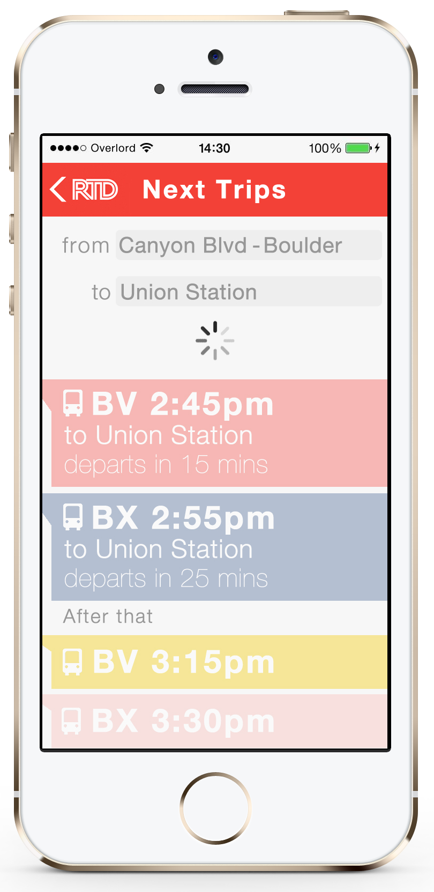
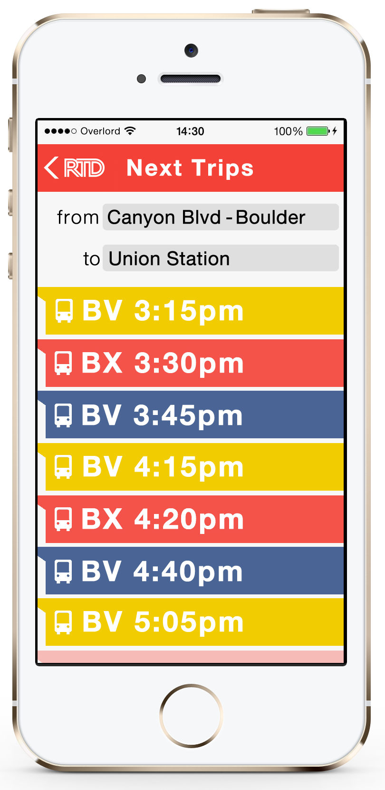
RTD App Concept
This is a concept for a mobile app for RTD, the Denver-Boulder metro transit system. Screen mockups show next trips loading with bus line and time until departure; detail screen shows fare info, walking distance to stop, and trip duration. Interaction elements include pull-down to refresh, scroll down to load more trips, and an autofill form for origin and destination fields. Color palette of red, blue, and gold reflects the Colorado state flag.
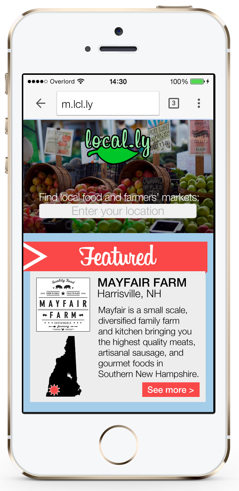
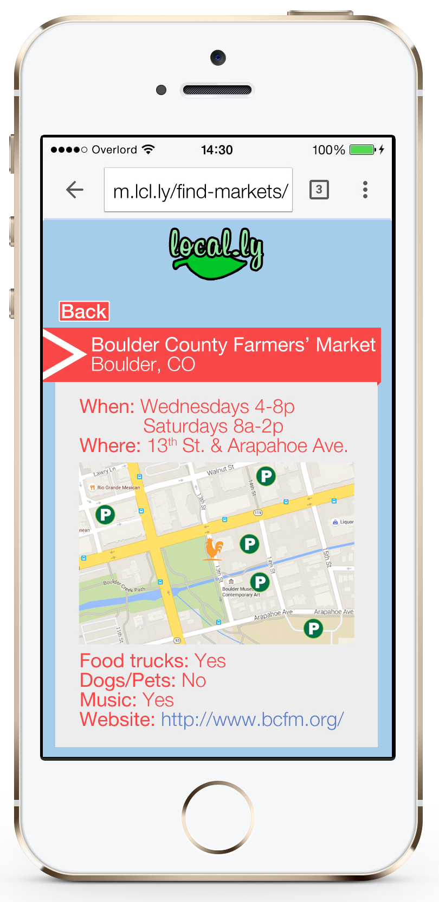
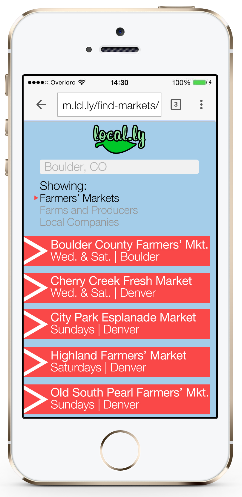
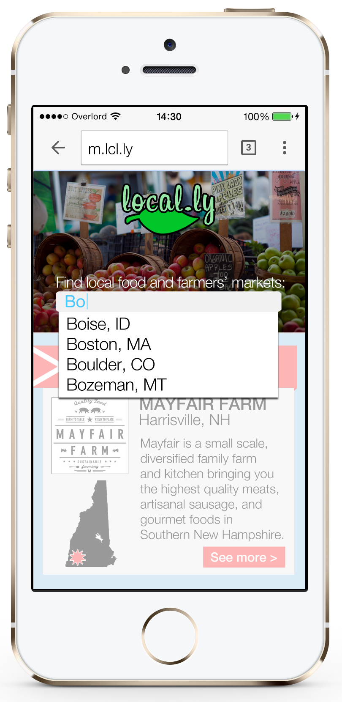
Local.ly Mobile Site Concept
This is a concept for Local.ly, a website that displays local farms, food producers, and farmers' markets around a given location. Screen mockups include a home page for the mobile site, search results for local farmers' markets, a drop-down autofill form for location, and a detail page.

Fender Ad Concept
The Fender Stratocaster is one of the most iconic guitars and played an instrumental in the history of rock n roll. This ad series reflects how music and the Stratocaster are intertwined.
Annie's Ad Concept
This ad concept for Annie's shows that mac and cheese is a timeless favorite that's still good at any age.
Glenfiddich Ad Concept
This concept for Glenfiddich shows how every drop is imbued with the character of Scotland and its traditional aged whiskey.